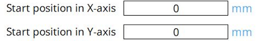
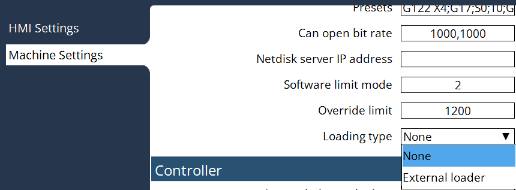
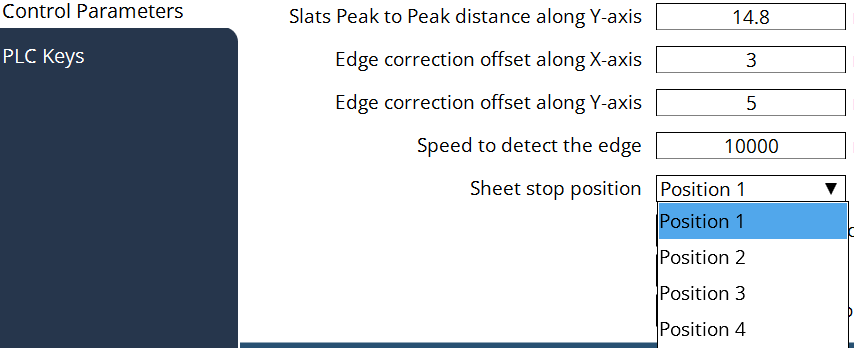

Réglages machine
Mesure des bords de la tôle
Tâche unitaire en cours d’exécution : l’opérateur peut sélectionner différents modes de positionnement avant d’exécuter le programme. Si vous exécutez le programme avec la « Mesure des bords de la tôle », alors le flux de travail ci-dessous sera suivi. Positionnement UC → Démarrer la production → Valider la fenêtre contextuelle → Démarrer la mesure de la tôle

Mode plan de production : La mesure des bords de la tôle est obligatoire lors de l’exécution d’un plan de production, la mesure des bords de la tôle sera exécutée automatiquement lors du démarrage de la production. Aucun positionnement de l’UC nécessaire → Démarrer la mesure des bords de la tôle basée sur la position de butée de la tôle et combinée avec le décalage de la distance de mesure.

Type de chargement
Configuration de l’automatisation Lorsqu’un dispositif d’automatisation est connecté, le plan de production est influencé par les signaux de l’interface d’automatisation. (par exemple, chargement terminé, déchargement terminé…) Nous devons donc fournir une configuration pour activer/désactiver la configuration de l’automatisation. Le paramètre doit pouvoir être modifié par le client, il se trouve donc dans la page Généralités des Configurations machine.

Type de chargement :
a. Aucun - Il s’agit du mode de chargement manuel.
b. Chargeur externe - Travail avec un chargeur externe.
Position de butée de la tôle
Définition de la position de chargement de tôle La butée de tôle pour la pile de matière brute peut être réglée dans différents coins de la configuration machine entière. Le dispositif d’automatisation a le coin de butée de tôle correspondant, donc la position de chargement de tôle dans la machine sera également impactée. Un paramètre doit être fourni pour ce cas. Une fois configurée, en mode plan de production, la stratégie de Mesure des bords de la tôle sera ajustée en conséquence.


Décalage Mesure des bords de la tôle
Dans certains cas particuliers où la position de chargement est fixée loin des butées de tôle, les paramètres peuvent être ajustés pour déplacer la position de départ pour la mesure des bords de la tôle.